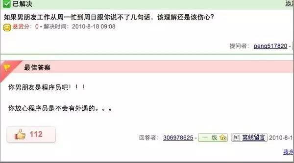

I heard a programmer brother went on a dating show and all the female guests turned off their lights? The vast majority of programmer brothers refuse to accept this! Who says it's not good to marry a programmer? You won't know if it's good until you finish reading—turns out they have these fine qualities!!
1、Persistence
A goddess: If you can get everyone on this forum arguing, I'll go with you tonight.
Programmer: PHP is the best language!
(The forum blew up, all kinds of arguing)
The goddess: You win. Let's go. You can do whatever you want.
Programmer: Not today. I have to convince them that PHP is the best language.
2、Integrity
I'm a miserable programmer. One day I worked overtime until almost dawn, so sleepy I could barely keep my eyes open. My manager was very concerned and asked if I wanted a midnight snack. I snapped, "Forget the snack, just let me get some sleep." My manager is a woman. She blushed and said, "How naughty," then leaned closer and closer, making me very nervous. Could she have discovered a bug in my program?
3、Loyalty
You must find a programmer as a husband!
Why?
More money, fewer words, dies early, and no time to cheat...

4、Obedience
The wife called her programmer husband: "On the way home from work, buy a jin of baozi and bring them back. If you see someone selling watermelons, buy one."
That evening, the programmer husband came home holding one baozi...
The wife said angrily: "Why did you buy only one baozi?!"
The husband replied: "Because I saw the watermelon seller."
5、 Warm-heartedness
Someone posted: "Dear JR, I want to become a programmer. What should I pay attention to..."
A programmer: "Wait until I get off work and I'll tell you in detail..."
And then... there was no "and then."
6、Loyalty to friends
I asked my programmer friend to lend me 1000. He said, "I'll lend you 24 more, to make it a round number."
7、Meticulousness
Programmer A: "I'll have the Yu Xiang Rou Si rice bowl. What will you have?"
Programmer B: "Kung Pao Chicken rice bowl."
Programmer A wrote on the order pad:
Yu Xiang Rou Si rice bowl 1
Kung Pao Chicken rice bowl 1
Programmer B: "Actually, I'll have the beef noodles!"
Programmer A corrected the order:
Yu Xiang Rou Si rice bowl 1
// Kung Pao Chicken rice bowl 1
Beef noodles 1
8、Cultured
After retiring, a programmer decided to practice calligraphy and spent a fortune on the Four Treasures of the Study. One day, after dinner, he was suddenly in high spirits. He ground ink, laid out paper, and lit fine sandalwood incense. After calming himself for a moment, he swept the brush and solemnly wrote a line: hello world!
9、Devotedness
Programmers are very devoted, as shown by their reading journey: Introduction to X Language —> Applied Practice in X Language —> Advanced Programming in X Language —> The Science and Art of X Language —> Beauty of Programming —> The Tao of Programming —> The Zen of Programming —> Guide to Cervical Spondylosis Rehabilitation.
Although programmers have so many merits, no one seems to know, and they even receive such treatment. Please cherish every programmer around you, really!
Source: Internet
Compiled by: Runoob